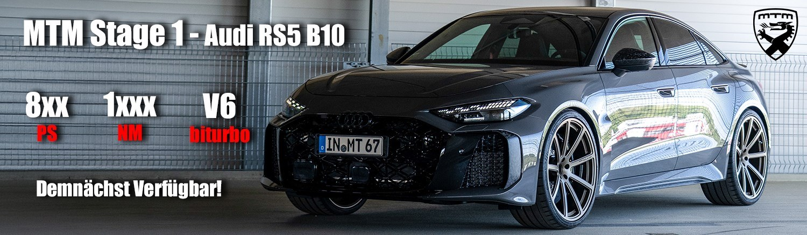

MTM entwickelt, prüft und verbaut seit 1990 Leistung für Audi, VW, Porsche, Bentley und Lamborghini – an einer Adresse, wenige Kilometer vom Audi-Stammwerk.
- 1990Gründung durch Roland Mayer
- 5Konzernmarken
- 1Standort für Entwicklung, Prüfstand, Einbau
Leistungen
Alles, was ein Auto schneller, schärfer und schöner macht.
01
Leistungssteigerung
Stage 1 bis 3: Software, Ladeluftkühlung, Turbolader – abgestimmt auf dem eigenen Prüfstand.

02
Motorumbau
Geschmiedete Kolben, Pleuel, Hubraumerweiterung – für Leistung, die die Serie nicht hergibt.

03
Abgasanlagen
Klappenauspuff und Sportendschalldämpfer aus Edelstahl – Klang und Optik in einem.


04
Felgen
Eigene MTM-Raddesigns – leicht, geprüft und auf die Serienbremse abgestimmt.

05
Fahrwerk
Gewindefahrwerke und Tieferlegungen – mehr Präzision, ohne den Alltag zu opfern.

06
Bremsanlagen
Größere Scheiben, Mehrkolben-Sättel, Stahlflex – Standfestigkeit für mehr Leistung.
07
Interieur
Sportsitze, Leder, Carbon – Innenräume, die zur Leistung passen.

08
Werkstatt & Service
Einbau, Inspektion, Prüfstandslauf und Eintragung – alles an einem Ort.
Demnächst verfügbar
MTM Stage 1
für den Audi RS5 B10.
- 8xxPS
- 1xxxNm
- V6Biturbo
Die erste Leistungsstufe für die neue RS5-Generation ist in der Abstimmung. Die finalen Werte veröffentlichen wir nach Abschluss der Prüfstandsläufe.
Vormerken lassen
Technik
M‑Cantronic. Mehr Leistung ohne Eingriff in die Seriensoftware.
Das MTM-Zusatzsteuergerät optimiert die Signale von Ladedruck- und Einspritzsensorik in Echtzeit. Die Motorsoftware bleibt unangetastet, das Fahrzeug lässt sich jederzeit auf Serie zurückrüsten.
- Fahrzeugspezifischer Plug-&-Play-Kabelsatz
- Abstimmung auf dem MTM-Prüfstand
- Einbau in wenigen Stunden, Rückrüstung jederzeit
- Kombinierbar mit Abgasanlage und Ladeluftkühlung
Ablauf
Vom ersten Gespräch bis zur Übergabe.
- 01
Beratung
Fahrzeug, Ziel und Budget. Wir sagen Ihnen, welche Kombination aus Software, Hardware und Fahrwerk dazu passt.
- 02
Angebot & Termin
Konkretes Angebot mit Umfang, Dauer und Preis. Nach Ihrer Freigabe bestellen wir die Teile und vereinbaren den Termin.
- 03
Umbau & Prüfstand
Einbau in der eigenen Werkstatt in Wettstetten. Jede Leistungssteigerung wird auf dem Prüfstand abgestimmt und dokumentiert.
- 04
Übergabe
Probefahrt, Erklärung, Unterlagen für die Eintragung. Sie fahren mit einem Auto nach Hause, das sich genau so anfühlt wie besprochen.
Über MTM
Seit 1990 in Wettstetten. Aus Leidenschaft für Leistung.
1990 gründete Roland Mayer die Motoren Technik Mayer. Entwicklung, Prüfstand und Einbau finden unter einem Dach statt. Wer zu uns kommt, spricht mit den Menschen, die das Teil entwickelt haben.
- 0+Jahre
- 0Marken
- 1Standort
Fragen & Antworten
Was Kunden vor dem Umbau wissen wollen.
Ist die Leistungssteigerung eintragungsfähig?
Ja. Für unsere Leistungsstufen und Komponenten liefern wir die nötigen Unterlagen für die Eintragung mit. Bei Sonderumbauten klären wir die Eintragung vorab.
Was passiert mit der Herstellergarantie?
Ein Eingriff in Motor oder Steuerung kann die Herstellergarantie für betroffene Bauteile einschränken. Wir besprechen das offen vor dem Umbau. Für unsere Komponenten und Arbeiten gilt die MTM-Gewährleistung.
Wie lange dauert ein Umbau?
Software-Update oder M-Cantronic: wenige Stunden. Fahrwerk, Bremse oder Abgasanlage: ein bis zwei Werkstatttage. Ein Motorumbau deutlich länger – den Zeitrahmen nennen wir im Angebot.
Kann ich auf Serie zurückrüsten?
Die M-Cantronic lässt sich jederzeit rückstandslos ausbauen. Fahrwerk, Abgasanlage und Felgen sind reversibel. Bei Motorumbauten ist die Rückrüstung aufwendiger – wir beraten Sie vorab.
Muss ich mein Fahrzeug nach Wettstetten bringen?
Für Einbau und Prüfstandsabstimmung ja. Einzelne Komponenten wie Felgen oder Abgasanlagen können auch über Partnerbetriebe verbaut werden.
Kontakt
Sprechen wir über Ihr Fahrzeug.
Sagen Sie uns, was Sie fahren und was Sie vorhaben – wir melden uns mit einer konkreten Empfehlung.
Adresse
MTM – Motoren Technik Mayer
[Straße Hausnummer]
85139 Wettstetten
Telefon
E-Mail
Öffnungszeiten
Mo–Fr [08:00–17:00] Uhr